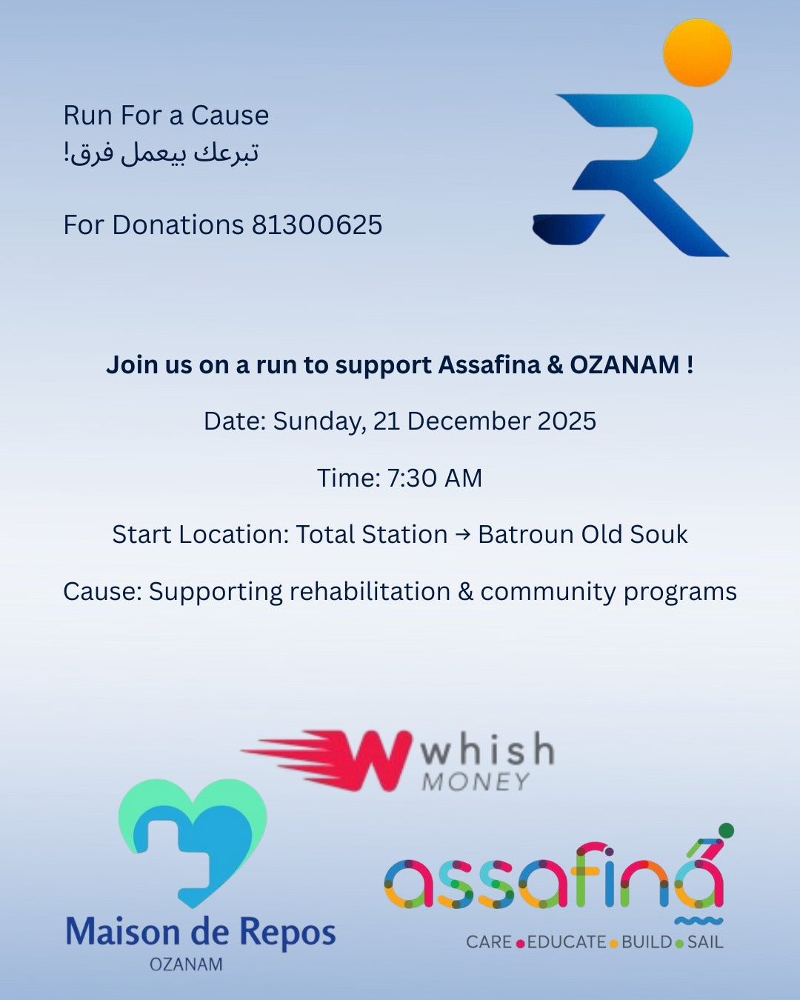
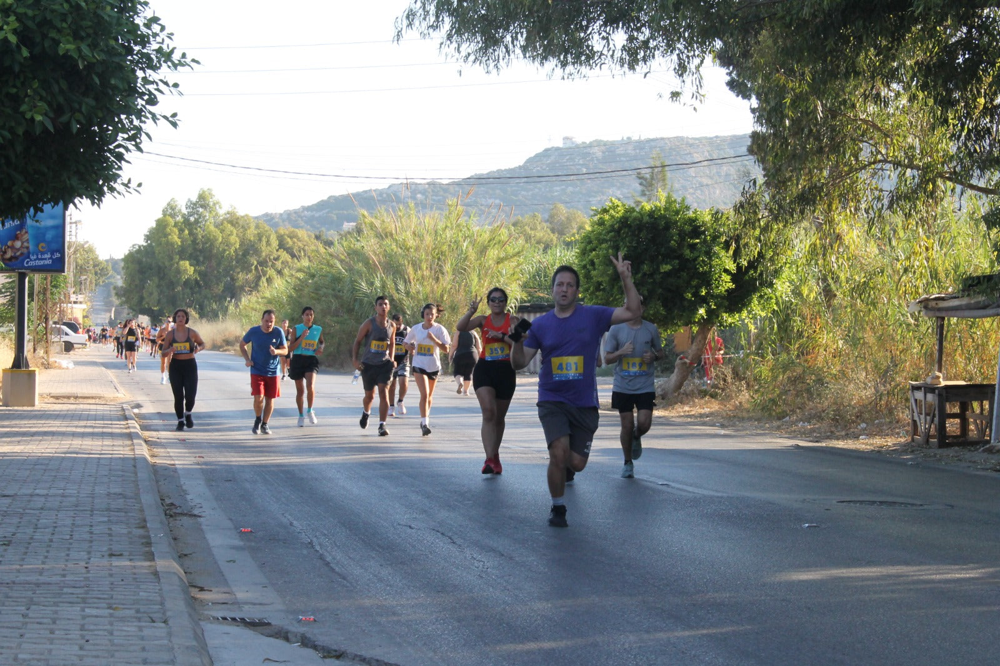
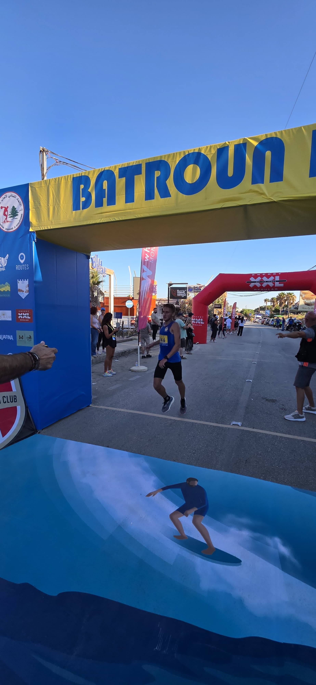

Created by people who love Batroun and its community — athletes, engineers, and marketing specialists building a meaningful, high-quality running event. Rooted in Batroun, open to all of Lebanon, and growing stronger every year.

Build a healthier, more connected community through running and public celebration.
Make Batroun a reference for coastal sport tourism and positive youth energy.
Safe routes, great organization, unforgettable vibes.
A team of athletes, engineers, and marketing minds creating a meaningful running experience — rooted in Batroun and open to all of Lebanon.

A special edition supporting charity, community programs, rehabilitation, and unity — where sport becomes a message of humanity.

Through running, we share unity, respect, and purpose — because sport is more than movement, it is a message.

Rooted locally, driven nationally. A race that carries the spirit of Batroun and connects communities across the country.
A shared experience that brings together runners, families, volunteers, and local supporters — built by professional athletes, engineers, and creatives who believe in sport as a way to connect people.
Beginners, casual joggers, and athletes — teenagers to seniors, locals from Batroun and participants from across Lebanon. Running for fitness, fun, personal challenge, and community spirit.
Local youth, sports clubs, and community members — registration & bib distribution, water stations, route safety, crowd support.
Cafés, restaurants, gyms, sports brands, beach resorts, and touristic spots collaborate — turning race day into a town-wide celebration.
Streets filled with runners instead of cars, music along the route, families and social moments after the race — then swimming, food, and a full day by the sea.
Encouraging running as an accessible sport for everyone — from first-time joggers to seasoned athletes.
Highlighting the seaside, old souks, and coastal roads — promoting Batroun as a sports and tourism destination.
Runners cheer for strangers, families wait at the finish line, and the town celebrates together.
Clear route guidance and support points, volunteer coordination and crowd flow, clean streets and responsible celebration.
Your brand is seen on race day, in content, and across community moments — not just a one-time logo.
Volunteering, partnerships & sponsorships → contact the team